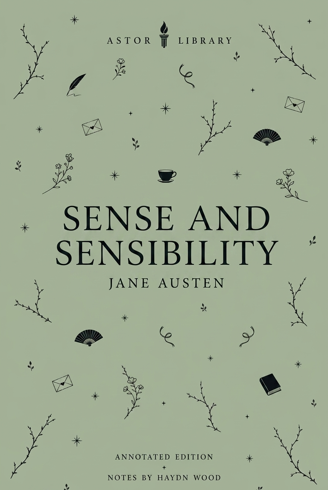

Ancient & Epic
The Aeneid, Virgil
Dryden’s 1697 translation, Virgil’s Roman epic, Troy, Aeneas, Dido, the underworld, Turnus, Augustan context, epic form, images and afterlives.
 LIBRARY
LIBRARYCatalogue
Current Astor text pages, arranged as a full catalogue of 34 books across Shakespeare, ancient epic, early modern prose, eighteenth-century fiction, Romantic and Regency writing, Victorian fiction, American writing and modern fiction.
Ancient & Epic
Dryden’s 1697 translation, Virgil’s Roman epic, Troy, Aeneas, Dido, the underworld, Turnus, Augustan context, epic form, images and afterlives.

Renaissance & Early Modern
1513 composition, 1532 publication, Florentine politics, Medici rule, Cesare Borgia, arms, law, virtù, fortuna, fear, appearance and reception.

Renaissance & Early Modern
Humanist prose, imagined commonwealth, property, labour, religion, law, travel narrative, satire and early modern political thought.

Restoration & Enlightenment
Anonymous first publication, Benjamin Motte, four voyages, Lilliput, Brobdingnag, Laputa, Houyhnhnmland, travel-writing parody, politics, science, colonialism, pride and human reason.

Restoration & Enlightenment
First publication, epistolary form, servant-master power, virtue, consent, class, Shamela, Anti-Pamela, Highmore paintings and later afterlives.

Romantic & Regency
Austen’s first published novel: anonymous first edition, Elinor and Marianne, inheritance pressure, female income, Regency marriage, emotional discipline, letters, secrecy and screen afterlives.
Romantic & Regency
First publication, First Impressions, Regency marriage economics, entail, free indirect style, Elizabeth Bennet, Darcy, Wickham, key passages and screen afterlives.

Romantic & Regency
Two Astor editions, anonymous first publication, 1818 and 1831 texts, Romantic science, galvanism, layered narration, the Creature, stage and screen afterlives.

Victorian
Serial publication, first edition, Kent and London, class ambition, crime, Miss Havisham, Magwitch, endings and screen afterlives.

Victorian
Publication under Ellis Bell, Haworth and the moors, Lockwood and Nelly Dean, Heathcliff, Catherine, inheritance, revenge, Gothic violence, dialect and screen versions.

Victorian
Publication history, Victorian London, science, secrecy, narrative method, divided identity, stage versions and screen afterlives.

Victorian
Magazine publication, revised book text, aestheticism, decadence, moral controversy, Wilde’s trials, portrait symbolism, stage records and screen versions.

Victorian
Second Sherlock Holmes novel: magazine publication in Lippincott’s, Mary Morstan, the Agra treasure, the 1857 colonial frame, detective method and Thames pursuit.

Victorian
Publication history, vampire folklore, Vlad Dracula, Whitby, documentary form, Victorian technology, medicine, gender, stage history and screen versions.

Victorian
Serial and book publication, Woking and Horsell Common, Martian invasion, Heat-Ray, fighting-machines, Victorian science, imperial reversal and adaptations.

American
Two Astor editions, 1851 publication history, Melville’s maritime background, the Essex disaster, Mocha Dick, nineteenth-century whaling, image records and screen versions.

American
Publication history, Klondike Gold Rush context, Buck’s movement from California estate to sled team and wolf pack, naturalism, labour, hunger, violence and screen versions.

Modern
Publication history, Russian Revolution context, Stalinism, propaganda, allegory, rewritten commandments, Boxer, Squealer, stage afterlives and screen versions.

Shakespeare
1598 quarto, Henry IV, Prince Hal, Falstaff, Hotspur, Eastcheap, Shrewsbury, Holinshed, honour, rebellion and screen afterlives.

Shakespeare
1594 quarto as The First Part of the Contention, Gloucester, Suffolk, Queen Margaret, Jack Cade, York’s claim, St Albans and civil-war beginnings.

Shakespeare
1595 quarto as The True Tragedie of Richard Duke of Yorke, Wars of the Roses, Queen Margaret, York, Edward IV, Warwick, Richard and the road to Richard III.

Shakespeare
1600 quarto, 1623 First Folio, Messina, Beatrice and Benedick, Hero and Claudio, overhearing, false evidence, public shame and Dogberry.

Shakespeare
1594 quarto, Henslowe’s Rose record, Roman revenge tragedy, Lavinia, Tamora, Aaron, sacrifice, mutilation, banquet horror and stage afterlives.

Shakespeare
1600 quarto, 1623 Folio, Ovid, Chaucer, Robin Goodfellow, Athens, fairy power, mechanicals, Brook’s 1970 RSC production, Mendelssohn, Britten and screen versions.

Shakespeare
First Folio, Sea Venture and Bermuda sources, Montaigne, Prospero, Miranda, Ariel, Caliban, masque, music and colonial readings.

Shakespeare
First Folio comedy, A Shrew textual problem, Italian source material, Christopher Sly, Katherina, Petruchio, Bianca, disguise, dowry, performance controversy and screen afterlives.

Shakespeare
1597 quarto, deposition-text problem, Holinshed sources, Gaunt, Bolingbroke, divine kingship, all-verse form and Essex performance record.

Shakespeare
1602 quarto, 1623 Folio, Falstaff, Mistress Ford, Mistress Page, Ford’s jealousy, Anne Page, buck-basket, Brentford disguise and Herne’s Oak.

Shakespeare
1604 Whitehall performance record, 1622 Quarto, 1623 First Folio, Cinthio source, Venice, Cyprus, Iago, Desdemona, the handkerchief and screen versions.

Shakespeare
Q1, Q2 and First Folio textual history, Amleth source tradition, revenge tragedy, Elsinore, Ophelia, stage history and screen versions.

Shakespeare
Q1 and First Folio textual history, Lear’s division of the kingdom, Cordelia, Gloucester, Edgar, source material, Tate’s adaptation, RSC records and screen versions.

Shakespeare
1597 quarto, 1623 First Folio, More and Holinshed sources, Clarence, Lady Anne, the princes, Buckingham, Bosworth, Cibber, RSC records and screen versions.

Shakespeare
First Folio publication, Boccaccio and Painter sources, Helena, Bertram, Parolles, rank, merit, the bed trick, problem-play history and RSC production records.

Shakespeare
Print history, source material, stage history, opera, screen versions and later responses.